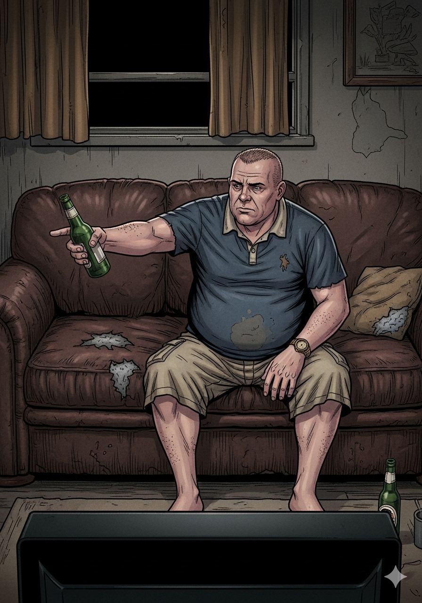
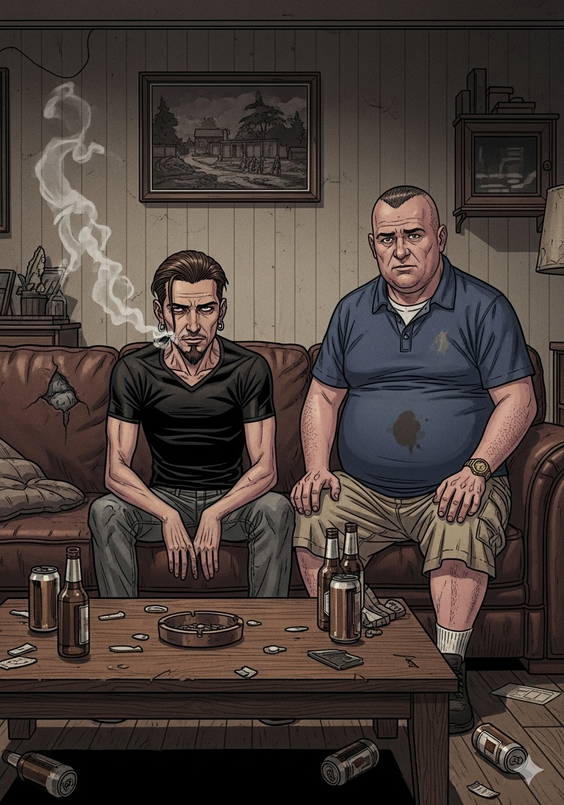

Escena 1 — El pitch

Un sofá de siempre. Una serie que va a destrozarles.
RULO
"Toni, se estrella un avión en una isla misteriosa del Pacífico. Y hay un oso polar."
TONI
"¿Un oso polar? ¿En el Pacífico? Rulo, los osos polares son del Ártico."
RULO
"Ya. Eso es exactamente lo que te quiero decir."
Escena 2 — El gancho

RULO
"Hay un cirujano que no sabe liderar pero no puede dejar de hacerlo. Un convicto que en realidad tiene corazón. Y un tío en silla de ruedas que la isla cura."
TONI
"Para. ¿La isla CURA a la gente?"
RULO
"La isla hace cosas, Toni. La isla HACE cosas."
Escena 3 — Primera temporada

TONI
"¡RULO! ¡El episodio de Locke! ¡El tío iba en silla de ruedas, Rulo! ¡EN SILLA DE RUEDAS!"
RULO
"Episodio cuatro. Walkabout. El mejor piloto de la historia de la televisión y el cuarto episodio ya es eso."
La primera temporada. Irrecuperable desde el episodio uno.
¡FLASH!
— Back. Forward. Sideways. —
4 · 8 · 15 · 16 · 23 · 42
No juegues a la lotería con estos números. En serio.
Escena 4 — Los números

RULO
"Cuatro, ocho, quince, dieciséis, veintitrés, cuarenta y dos. Aparecen en el billete de lotería de Hurley. En la escotilla. En el barco. EN TODAS PARTES, Toni."
TONI
"Rulo, llevas tres horas apuntando números en una libreta."
RULO
"Son SIGNIFICATIVOS, Toni."
Escena 5 — El Monstruo de Humo

TONI
"¿QUÉ ES ESO? ¿QUÉ ES ESA COSA NEGRA? ¿ES HUMO? ¿ES UN MONSTRUO? ¿ES LOS DOS?"
RULO
"Es el Monstruo. No te preocupes, lo explican en... bueno, más o menos lo explican."
El Monstruo de Humo. Seis temporadas. Pocas respuestas.
Escena 6 — The Constant

RULO
"Temporada 4, episodio 5. The Constant. Desmond y Penny. Tienes que verlo."
TONI
"...Rulo. Rulo me ha entrado algo en el ojo."
El mejor episodio de la serie. El mejor episodio de muchas series.
"No importa lo que hagas.
Importa lo que eres."
— John Locke · Perdidos (2004)
Escena 7 — A partir de la cuarta

TONI
"¡Rulo! ¡Ahora hay viajes en el tiempo! ¡Están en los años setenta! ¡DHARMA! ¡Jacob! ¿Qué está pasando?!"
RULO
"La isla es... compleja."
Temporada 4 en adelante. Los guionistas también se perdieron.
¡EXECUTE!
— Pulsa el botón. 108 minutos. —
Escena 8 — El maratón

TONI
"¿Cuántos misterios hay abiertos ahora mismo?"
RULO
"Cuarenta y siete."
TONI
"¿Cuántos van a cerrar?"
RULO
"...Algunos."
Temporada 5. La fe ciega del fan de Perdidos.
Escena 9 — La pregunta del millón

RULO
"¿Sabes qué es lo más increíble de Perdidos? Que la primera vez que salió en antena, la gente se quedó al día siguiente en la oficina hablando de ello. Eso no había pasado nunca."
TONI
"Tenías doce años, Rulo."
La primera serie de la era del spoiler. El antes y el después.
Escena 10 — El maldito final

Temporada 6. Episodio 17. The End.
TONI
"Rulo. ¿Estaban muertos desde el principio?"
RULO
"No. O sea... algunos sí. Pero los de la isla no. Pero el sideway timeline sí. Pero los que sobrevivieron... mira, es una metáfora del viaje colectivo hacia la—"
TONI
"Los números. ¿Qué significaban los números?"
El final más debatido de la historia de la televisión. Sin respuesta oficial.
¡NAMASTE!
— DHARMA Initiative —
Escena 11 — El veredicto

RULO
"Ocho sobre diez, Toni. Tres temporadas perfectas y la primera serie en hacer que el mundo entero esperara un capítulo de tele. Eso no se le quita."
TONI
"Ocho. Pero bajo al siete si algún día alguien me explica qué eran los números de verdad."
Nadie te va a explicar los números, Toni.
⭐ Veredicto de Rulo y Toni ⭐
8.0
TRES TEMPORADAS PERFECTAS,
UN FINAL QUE EXISTE
Perdidos fue la primera serie en crear comunidad masiva en tiempo real. Nadie había visto nunca al día siguiente de un episodio a millones de personas discutiendo lo que acababa de pasar. Las tres primeras temporadas son brillantes: personajes, misterio, estructura narrativa revolucionaria. A partir de la cuarta, los guionistas se pierden junto con los supervivientes. El final divide, como tenía que hacer. Imprescindible.